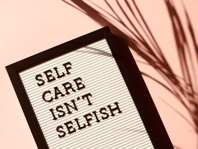
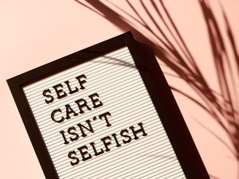

“Don’t ever let somebody tell you that you can’t do something, not even me. You got a dream, you gotta protect it. You want something, go get it. Period.”
A man found a cocoon of a butterfly.One day a small opening appeared. He sat and watched the butterfly for several hours as it struggled to force its body through that little hole.Until it suddenly stopped making any progress and looked like it was stuck.
So the man decided to help the butterfly. He took a pair of scissors and snipped off the remaining bit of the cocoon. The butterfly then emerged easily, although it had a swollen body and small, shriveled wings.The man didn’t think anything of it and sat there waiting for the wings to enlarge to support the butterfly. But that didn’t happen. The butterfly spent the rest of its life unable to fly, crawling around with tiny wings and a swollen body.Despite the kind heart of the man, he didn’t understand that the restricting cocoon and the struggle needed by the butterfly to get itself through the small opening; were God’s way of forcing fluid from the body of the butterfly into its wings. To prepare itself for flying once it was out of the cocoon.
Our struggles in life develop our strengths. Without struggles, we never grow and never get stronger, so it’s important for us to tackle challenges on our own, and not be relying on help from others.
If you want to change your life, you are going to have to do things differently. And sometimes, you can look to inspirational books to create a positive change in your life.Whether you turn pages, tap a tablet, or listen to audio, a good book can be a perfect relaxation aid, tutor, or source of inspiration.
Here’re the 6 books I recommend you reading too to get inspired.
 

“Your passion is waiting for your courage to catch up.” – Isabelle Lafleche
Motimav is oa growing self-development websites worldwide; with articles and stories covering everything from quotes, net worths, richest lists, self-development lessons, and more. We are continuing on our mission to inspire and motivate people around the world. Welcome to our community, and we are so grateful to have you here with us. You can click on any of the buttons below to follow us on our social media channels; or to get in touch with the founder, head over to the 'Help & Support' page.